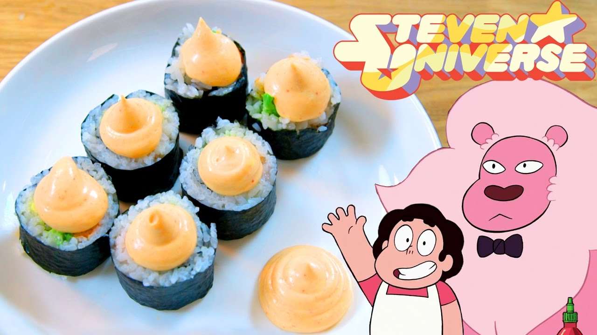
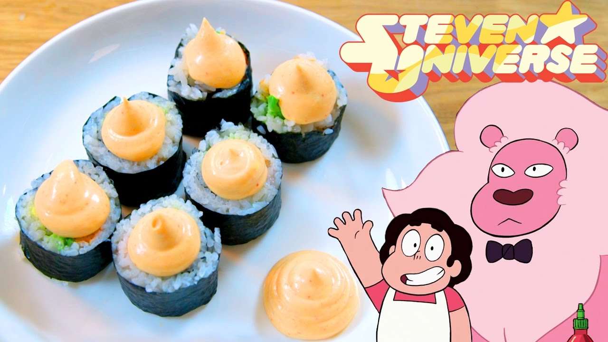

Steven's Snack Sushi
 

Sushi so good that you won't miss fish!
Snack Sushi from Steven Universe is perfect to make to share with a friends (or you can eat it all in one if you are a large pink lion!)
"This is a great dish for you to make if you're going to have friends over who don't like the taste of raw fish!" - Steven Universe
Ingredients
- 1 Avocado
- Mayonnaise
- Your favorite hot sauce (we recommend Sriracha)
- Sushi rice
- ½ cup of rice vinegar
- 1 Tablespoon of vegetable oil
- ¼ cup of white sugar
- 1 teaspoon of salt
- 2 Sheets of nori
- 1 Bag smooth cheese puffs
Directions
Make Sushi Rice:
- In a saucepan, combine the sugar, rice vinegar, vegetable oil, and salt on medium heat. Cook until the sugar dissolves. Combine with the rice.
- Mix the rice until there is no more liquid and it is cool to touch.
Assembling the Sushi:
- Slice the avocado in half. Using your knife, extract the pit. Make vertical cuts on the inside of the avocado making sure not to pierce the skin. Use a spoon to scoop out the cut avocados. Set them aside.
- Put the seaweed paper on top of the sushi roller. Wet your fingers so the rice doesn’t stick to your hands. Add a generous amount of sushi rice to the paper. Wet your fingers again and press down the sushi rice.
- Add the sliced avocados in a line in the middle of the sushi rice. Add the cheese puffs next to the avocados.
- Roll the sushi using the bamboo roller making sure to press down, forming the sushi shape. Cut the sushi into pieces.
- Combine the mayonnaise with the hot sauce. Add a dollop onto each sushi piece.
Watch Steven Make it Here
Recipe from Feast of Fiction